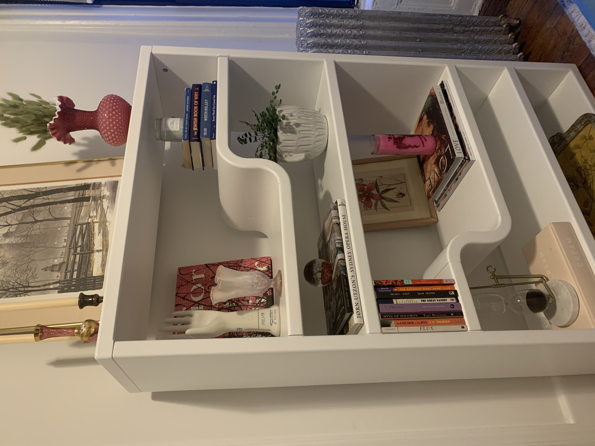

This webpage is by Julia Schendell
This webpage is for the Spring 2021 Journalism Design Toolkit class as part of the Journalism+Design department at Eugene Lang College for Liberal Arts at the New School University.
Here is the link to my Substack
Here is a link to my poster page.
This webpage is for the Spring 2021 Journalism Design Toolkit class as part of the Journalism+Design department at Eugene Lang College for Liberal Arts at the New School University.

This webpage is by Julia Schendell
 Here is a link to my back-end code I am a sophomore at The New School. My major is Journalism and Design.
Eu nisl nunc mi ipsum faucibus. Lectus arcu bibendum at varius vel pharetra vel. Mauris pharetra et ultrices neque ornare aenean euismod elementum nisi. Aliquet risus feugiat in ante metus. Est velit egestas dui id ornare arcu. Nec nam aliquam sem et. Ultricies tristique nulla aliquet enim tortor at. Consequat nisl vel pretium lectus quam id leo. Orci phasellus egestas tellus rutrum tellus pellentesque. Posuere ac ut consequat semper. Ut consequat semper viverra nam libero justo laoreet. Euismod elementum nisi quis eleifend quam adipiscing vitae proin.